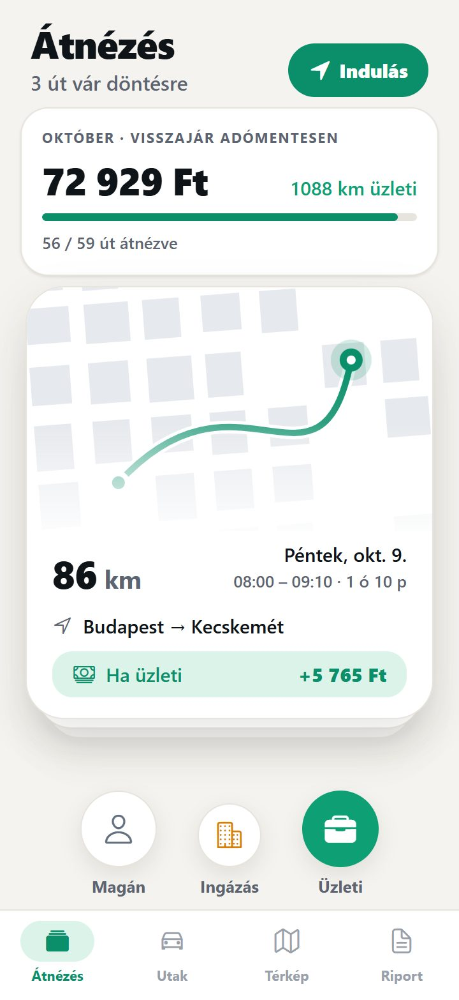
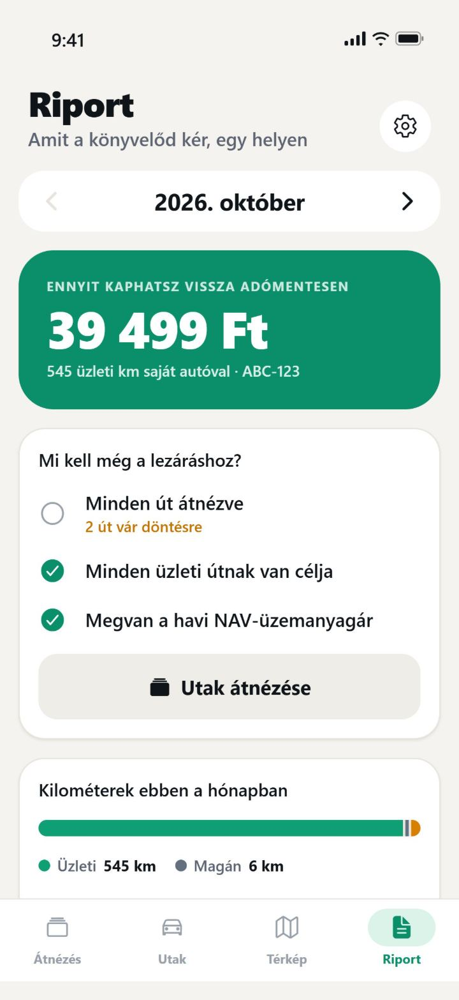
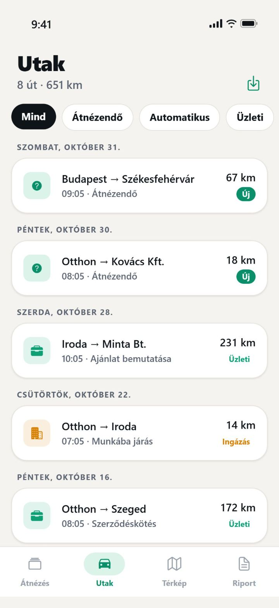
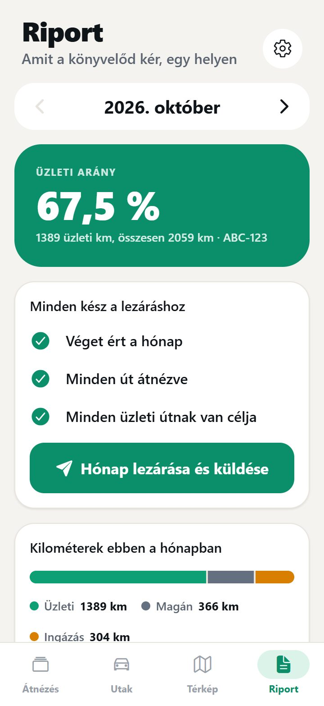

Vezetsz. Elhúzod. Kész a papír.
A Trippo magától rögzíti az utaidat. Te csak elhúzod: jobbra üzleti, balra magán. Hónap végén egy koppintással kész a NAV-szabályok szerinti útnyilvántartás és kiküldetési rendelvény.
A rögzítés és a besorolás ingyenes. Pro: 14 nap ingyen, utána 1 990 Ft/hó. iPhone-ra.

Nem kell elindítanod semmit. A Trippo a háttérben rögzíti az utat, a km-t és a címeket.
Jobbra üzleti, balra magán, felfelé munkába járás. A visszatérő utakat idővel magától besorolja.
Hónap végén lezárod, és mehet a PDF és az Excel a könyvelődnek. Egy koppintás.
Húzd el, és nézd meg, mennyi költségtérítést számolhatsz el saját autóval.
Becslés a 2026. novemberi NAV-árral és 15 Ft/km autóhasználattal. A saját esetedről kérdezd a könyvelődet. Részletes kalkulátor

A költségtérítést a havi NAV-üzemanyagárral és a hivatalos fogyasztási normával számoljuk. Minden üzleti útnál látod, mennyit ér.
Pontos km, dátum, honnan-hová és az út célja. Tankolási blokkot és km-órát elég lefotóznod.


Céges autónál nincs km-térítés, viszont bizonyítanod kell, mennyit jársz üzletben. A Trippo ezt is kiszámolja.
| Kézi Excel | Trippo | |
|---|---|---|
| Utak rögzítése | Este, emlékezetből | Magától, minden útnál |
| Kilométer | Kézzel, útvonaltervezővel | GPS-ből, úthálózatra illesztve |
| NAV-ár és norma | Havonta kikeresed | Automatikusan |
| Hibák lezárás előtt | Ha észreveszed | NAV-ellenőrzés jelzi |
| Lezárt hónap | Bármikor átírható | Ellenőrző kóddal védve |
| A könyvelőnek | E-mailben, fájlonként | Saját portálon, kész Excellel |
Inkább maradnál az Excelnél? Töltsd le az ingyenes sablont.
Az utak rögzítése és besorolása ingyenes. A Pro 14 nap ingyenes próbával indul, és bármikor lemondható.
1 990 Ft/hó
Havonta számlázva
19 900 Ft/év
Évente számlázva
Minden ügyfeled lezárt hónapja egy helyen, ingyen. Látod, ki zárta le a múlt hónapot, és egy kattintással letöltöd az Excelt.
Nem. A Trippo a háttérben rögzít, ha a helyhozzáférés „Mindig” értékre van állítva. Te csak besorolod az utakat.
A pontos útvonalért a GPS folyamatosan fut, ezért több akkut használ, mint a legtöbb app. Hosszabb úton tartsd töltőn a telefont.
A magánútként megjelölt utak útvonala, címei és megállói a telefonodon maradnak. A szerverünkre csak a km és az időpont kerül.
Alagútban vagy jel nélkül előfordulhat. A Trippo ilyenkor jelzi a kimaradást, és lezárás előtt ellenőrizheted a km-t.
Igen. Saját, céges és 3,5 tonna alatti kisteherautót is felvehetsz. Céges autónál és kisteherautónál nincs km-térítés: a napló az üzleti arányt igazolja.
Az útnyilvántartás tartalmazza a jogszabály által előírt adatokat. A Trippo segédeszköz, nem adótanácsadás: az adatok valódiságáért a felhasználó felel, ezért nézd át az utakat lezárás előtt.
iPhone Beállítások › a neved › Előfizetések › Trippo Pro. A próbaidő alatti lemondásnál nem terhelünk.